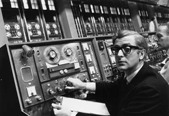

1960
Starten på internet heter Arpanet
29 oktober 1969 skickas det första meddelandet mellan två datorer på Arpanet, föregångaren till dagens internet. Datorer har nu börjat prata med varandra och det första fröet till internet är sått. I september 1969 länkas Arpanets första dator med en sprillans ny, specialbyggd maskin, en IMP – Interface Message Processor . Och några veckor senare, 29 oktober klockan halv elva på kvällen skickar forskargruppen på UCLA, ledd av professor Leonard Kleinrock, iväg ett meddelande till en dator på Stanford drygt 50 mil därifrån. Det innehåller endast bokstäverna L och O (forskarna hade tänkt skriva LOGIN men servern kraschade).
